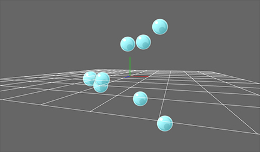
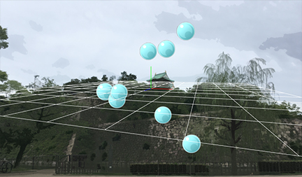
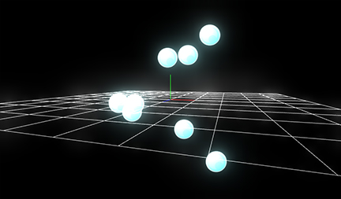
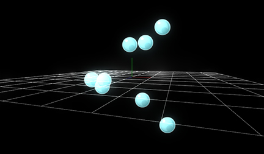

Parameter
Background Color
Specify the color of the background.

Background image
Specify an image for the background.

Ground
Show a ground surface.
It is useful for checking soft particles or depth.

Bloom
Specify parameters of bloom.

Tonemap
Specify a kind of tone maps.
